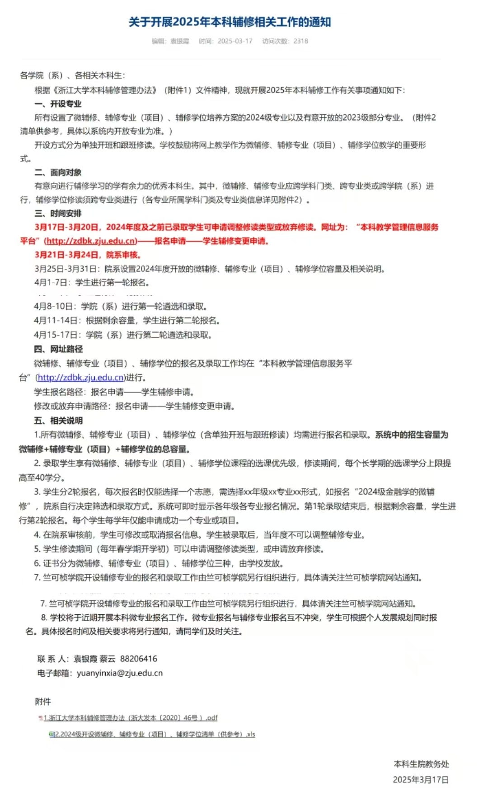

浙江大学本科辅修相关事项
一、浙江大学本科辅修管理办法
点击下载查看：
浙江大学本科辅修管理办法
二、2024级本科辅修相关情况

点击下载查看：
2024级微辅修、辅修项目、辅修专业开设清单
三、关于辅修相关问题的若干说明
辅修后选课学分上限由35学分提高至40学分，有助于选课
选择热门通用专业（计算机、机器人等）的辅修有一定的用处
无论是微辅修、辅修专业抑或是辅修学位，对将来跨专业保研、考研、就业实际用处均不大
申请辅修后每学年春学期可以申请放弃辅修或变更辅修专业
竺可桢学院的辅修班单独进行选拔，如工程技术高级班（ACEE）等
辅修要收取对应学分的学费